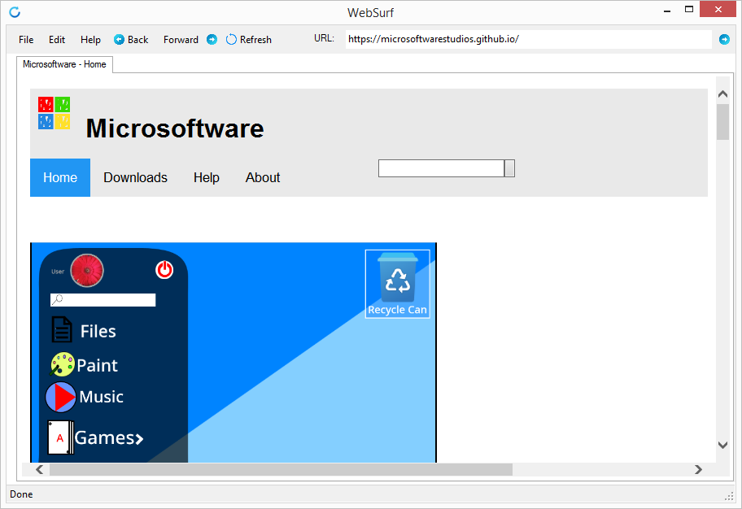
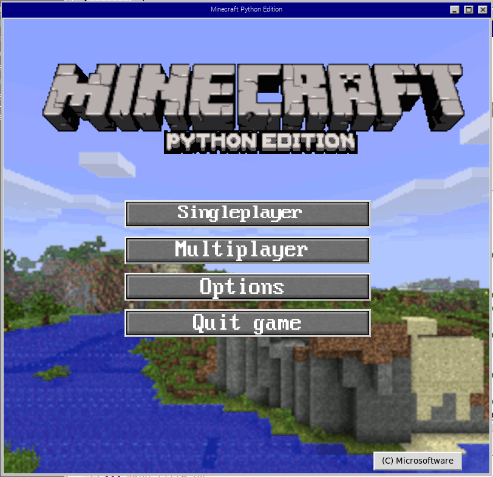
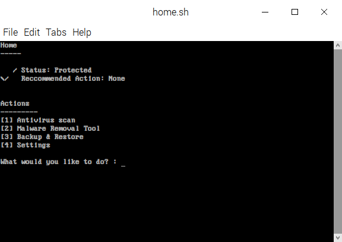

WebSurf
Introducing WebSurf, the powerful yet simple web browser for everyone!
v. 1.2.0.6 (websurf1.2.0.6)

Download for Windows:
Minecraft Python Edition
Create, Explore, Survive with Minecraft Python Edition! Fast and fun, this game can provide hours of entertainment in the blocky world of Minecraft!
v. 0.1.15 Alpha Prerelease (mcpy0.1.15A-pre), Launcher v1.0

Download for Windows:
Can't install? Try this!PC Protector Security Suite
An easy way to keep your PC secure. This is still in development, though, so DO NOT use this as you go-to antivirus yet.
v. 0.5.15 Beta (pcp0.5.15bpor)

Download Beta for Linux (Online Installer)